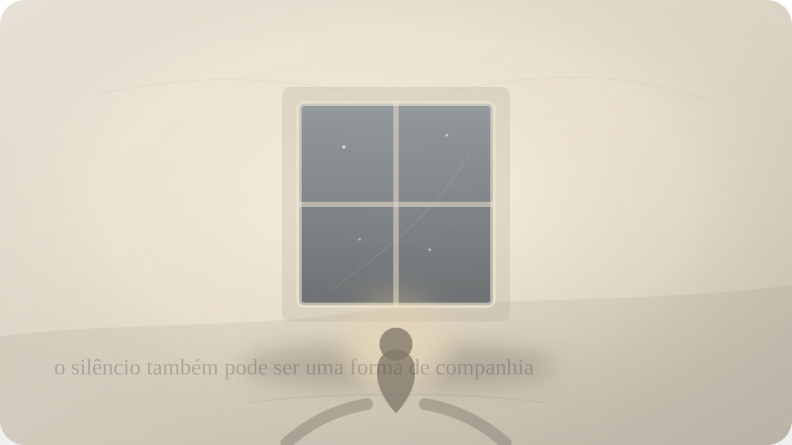

Solidão
O silêncio é vazio ou presença?
Rumi e a solidão como lugar onde a ausência pode se transformar em escuta.

A solidão nem sempre chega como drama. Às vezes ela entra devagar, quando a casa silencia depois de uma conversa, quando uma mensagem não vem, quando a cidade continua funcionando sem reparar na sua falta. Não há necessariamente tragédia. Há apenas um espaço aberto demais, uma cadeira vazia, uma noite comprida, uma sensação de que o mundo prossegue sem precisar de você.
Nesse momento, o silêncio pode parecer acusação. Ele parece dizer que ninguém está vindo, que ninguém percebe, que sua presença não altera muito a ordem das coisas. O quarto fica maior. O corpo fica mais audível. Pensamentos antigos começam a ocupar os cantos. A solidão deixa de ser apenas estar só e passa a ser interpretada como prova: talvez eu não seja escolhido, talvez eu não importe, talvez exista algo em mim que não encontra lugar.
Rumi conhecia a linguagem da ausência. Sua poesia nasceu dentro de uma tradição sufista em que o amor humano, a perda, o mestre, o amigo, o amado e o divino frequentemente se atravessam. A relação com Shams de Tabriz marcou sua vida espiritual e poética de modo decisivo. Depois da ausência de Shams, Rumi não escreveu simplesmente sobre falta; transformou a falta em caminho, em chama, em escuta, em música interior.
Essa transformação não deve ser adoçada demais. A ausência dói. Perder uma presença, desejar alguém, atravessar saudade, sentir-se sem testemunha: nada disso se resolve com uma frase bonita. A poesia de Rumi é forte justamente porque não nega a ferida. Ela pergunta se a ferida pode se tornar abertura sem deixar de ser ferida.
A pergunta deste ensaio nasce aí: o silêncio que você teme é realmente vazio, ou ele apenas ainda não foi escutado?
Na experiência comum, confundimos presença com estímulo. Se há mensagem, ruído, companhia, aprovação, movimento, então sentimos que a vida está confirmada. Se tudo se cala, a mente conclui que algo falta. Mas talvez parte do sofrimento da solidão venha dessa dependência: precisamos que o mundo faça barulho para provar que existimos.
Rumi desloca essa lógica. Em sua obra, especialmente no Masnavi e no Divã de Shams, a ausência frequentemente aparece como um convite paradoxal. Aquilo que desaparece do campo visível pode despertar uma escuta mais profunda. O amado ausente não é apenas alguém que falta; é também aquilo que força o coração a procurar uma presença menos superficial.
Isso não significa que a solidão seja automaticamente sagrada. Há solidões que esmagam, isolam, adoecem. Há abandonos concretos, vínculos rompidos, pobreza afetiva, exclusão social, lutos e feridas que exigem cuidado humano real. Nenhuma leitura espiritual deveria transformar necessidade de apoio em fracasso interior. A pessoa precisa de gente, toque, conversa, comunidade, proteção.
Mas existe uma diferença entre precisar de presença e usar qualquer presença para fugir de si. Uma coisa é desejar vínculo. Outra é não suportar um minuto sem distração porque, quando tudo cala, aparece uma vida interior que não sabemos habitar.
Rumi parece falar a esse segundo ponto. O silêncio não é apenas ausência de som. Pode ser o lugar onde aquilo que estava coberto pelo ruído começa a aparecer. A inquietação que você abafava com conversa. A saudade que você transformava em ocupação. O desejo que você disfarçava como opinião. A tristeza que só encontra voz quando ninguém mais está falando.
A solidão, nesse sentido, não cria necessariamente o vazio. Ela revela o vazio que já estava sendo mantido ocupado.
Essa frase pode soar dura, mas não precisa ser cruel. Todos nós ocupamos vazios. Fazemos isso com trabalho, tela, romance, memória, planejamento, compras, ressentimentos, projetos, explicações. A vida humana precisa de movimento. O problema começa quando todo movimento vira anestesia. Quando não sabemos mais se estamos vivendo ou apenas evitando escutar.
Rumi não convida a uma solidão seca, orgulhosa, autossuficiente. Sua solidão é atravessada por amor. Mas o amor, nele, não é posse tranquila de um objeto. É uma força que desmonta a separação ilusória entre eu e mundo, entre amante e amado, entre busca e encontro. Por isso o silêncio pode ser presença: não porque alguém necessariamente aparece, mas porque o coração deixa de exigir que a presença tenha sempre a forma que ele esperava.
Há uma solidão que diz: ninguém está aqui. Há outra que pergunta: o que está aqui quando ninguém está aqui?
Essa segunda pergunta muda a atmosfera. Talvez haja respiração. Talvez haja corpo. Talvez haja uma dor pedindo linguagem. Talvez haja memória. Talvez haja uma falta que, ao ser escutada sem pressa, revele não apenas carência, mas profundidade de desejo. O silêncio deixa de ser buraco e começa a ser espaço.
A diferença entre buraco e espaço é sutil. Um buraco suga. Um espaço permite. Quando a solidão é vivida como buraco, qualquer coisa serve para preenchê-la: uma conversa ruim, uma relação que diminui, uma notificação, um retorno ao que já nos feriu, uma exposição excessiva de si em busca de confirmação. Quando a solidão se torna espaço, ela não elimina o desejo de vínculo, mas impede que a carência escolha no lugar da alma.
Nesse ponto, Rumi pode ser lido como antídoto contra duas ilusões opostas. A primeira é acreditar que só existimos quando alguém nos confirma. A segunda é acreditar que não precisamos de ninguém. A presença verdadeira talvez esteja entre esses extremos: poder amar sem mendigar existência, poder estar só sem transformar a solidão em superioridade.
O silêncio também revela o tipo de amor que procuramos. Às vezes queremos alguém não para encontrar alguém, mas para não encontrar a nós mesmos. Queremos uma voz externa que cubra a pergunta interna. Queremos que o outro nos salve do quarto, do corpo, da memória, do medo. Quando isso acontece, a relação fica pesada demais. O outro deixa de ser pessoa e vira remédio.
Rumi falaria do amor de um modo mais vasto. O amado pode acender o caminho, mas não deve ser reduzido a tampa do vazio. O encontro verdadeiro não serve apenas para abolir a solidão; ele pode ensinar uma solidão mais habitável. Depois de amar, perdemos a ilusão de sermos uma ilha fechada. Mas também podemos aprender que a presença não termina completamente quando a forma visível se ausenta.
Quem já perdeu alguém conhece essa ambiguidade. Há uma falta concreta, insubstituível. Ninguém ocupa o mesmo lugar. Ao mesmo tempo, algumas presenças continuam operando dentro de nós: uma frase, um gesto, um modo de olhar, uma coragem recebida, uma pergunta que a pessoa deixou. A ausência não é presença plena. Mas também não é puro nada.
Essa percepção é importante para a saudade. A saudade sofre quando tenta transformar o passado em moradia permanente. Ela quer que o que passou volte exatamente como era. Mas o amor que passou pela vida não desaparece apenas porque mudou de forma. O problema é que a mente deseja a forma; o coração às vezes ainda pode reconhecer a presença transformada.
Rumi não resolve essa tensão. Ele a canta. E talvez cantar seja uma forma de não reduzir a dor a explicação. O Masnavi está cheio de histórias, imagens, vozes, animais, amantes, mestres, aprendizes, perdas e retornos. A sabedoria ali não é uma tese isolada; é movimento. Como se o silêncio também precisasse de música para ser suportado.
Na prática, o que fazer com a solidão? Talvez primeiro parar de humilhá-la. Nem toda noite solitária é fracasso. Nem todo silêncio prova abandono. Nem toda ausência significa indignidade. Há momentos em que a vida recolhe os ruídos para que algo mais baixo possa ser ouvido.
Isso não substitui buscar pessoas. Ligue para alguém. Procure companhia digna. Construa comunidade. Peça ajuda se a solidão estiver pesada demais. A espiritualidade que impede alguém de pedir apoio tornou-se vaidade. Mas, ao mesmo tempo, quando a companhia não está ali, talvez seja possível não transformar imediatamente o silêncio em sentença.
Sente-se por um instante sem negociar com a ausência. Não para gostar dela à força. Apenas para perceber sua textura. Onde ela pesa no corpo? Que história ela conta? De quem ela sente falta? Que tipo de presença ela deseja? O que ela está tentando proteger? O que ela quer que você finalmente escute?
Talvez, nesse ponto, a solidão deixe de ser apenas um quarto vazio. Ela se torna uma soleira. De um lado, a falta real de quem não está. Do outro, uma presença que não depende totalmente de alguém entrar pela porta. Entre as duas, você aprende a respirar sem negar nenhuma.
Rumi não nos pede para amar menos. Talvez peça justamente o contrário: amar tão profundamente que a ausência não destrua toda presença. Amar sem transformar o outro em proprietário da nossa existência. Amar o suficiente para permitir que o silêncio também tenha algo a dizer.
A pergunta final não fecha nada. Ela apenas devolve o ouvido ao lugar onde a dor começou: quando tudo se cala ao seu redor, você encontra somente vazio, ou há alguma presença esperando que você pare de fugir?
Pergunta final
Quando tudo se cala ao seu redor, você encontra somente vazio, ou há alguma presença esperando que você pare de fugir?
Fontes e leituras
- RUMI, Jalal al-Din. Masnavi. Tradução e organização de Jawid Mojaddedi. Oxford University Press.
- RUMI, Jalal al-Din. The Masnavi of Jalaluddin Rumi. Tradução de Reynold A. Nicholson.
- RUMI, Jalal al-Din. The Discourses of Rumi: Fihi Ma Fihi. Tradução de A. J. Arberry.
- CHITTICK, William C. The Sufi Path of Love: The Spiritual Teachings of Rumi. SUNY Press.
- SCHIMMEL, Annemarie. The Triumphal Sun: A Study of the Works of Jalaloddin Rumi.
- Encyclopaedia Iranica. Rumi, Jalal-al-Din vii. Philosophy, por William C. Chittick.
Leituras relacionadas
E você, o que está sentindo agora?
Escolha seu momento e encontre uma reflexão filosófica para atravessá-lo com mais clareza.
Encontrar uma reflexão